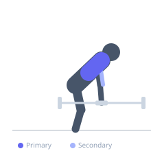
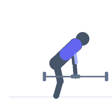

Exercise guide / Upright Row
Upright Row
The upright row is a pulling exercise in which a barbell or dumbbells are lifted vertically from the hips to the chin, with elbows leading and rising above the hands. It trains the lateral deltoid and upper trapezius simultaneously and is effective for shoulder and trap development, though grip width significantly affects both efficacy and shoulder comfort.
Primary muscles
deltoid lateral
trapezius upper
Secondary muscles
deltoid anterior
biceps brachii long head
Stabilizers
supraspinatus
Equipment
Standard Barbell
Optional
Dumbbell (Fixed)


Starting position
- Stand with feet shoulder-width apart holding a barbell at hip level with a pronated grip. Use a grip slightly wider than shoulder width to reduce shoulder impingement risk.
Setup
- A wider grip is generally safer for the shoulder than a narrow grip. Avoid narrow-grip upright rows if you have history of shoulder impingement.
Steps
- Pull the barbell upward along the body, leading with the elbows.
- Raise until the bar is at upper chest or chin height with elbows above the bar.
- Lower under control back to the starting position.
Coaching cues
- Lead with the elbows — let the bar follow
- Keep the bar close to your body throughout the entire movement
Breathing
- Exhale on the upward pull, inhale on the descent.
Range of motion
- Raise bar to upper chest level. Elbows should be level with or slightly above the bar.
Tempo
- 2-1-2-0
Common mistakes
- Using a very narrow grip, which internally rotates the shoulder at end range and can cause impingement
- Raising the bar above chin height
Safety
- Individuals with existing shoulder impingement should avoid this exercise or use a wider grip and limited range of motion
- Stop the bar at upper chest height to avoid end-range shoulder impingement
Training
- hypertrophy: 8–15 reps
- hypertrophy: 3–4 sets
- Rest: {'hypertrophy': 90}